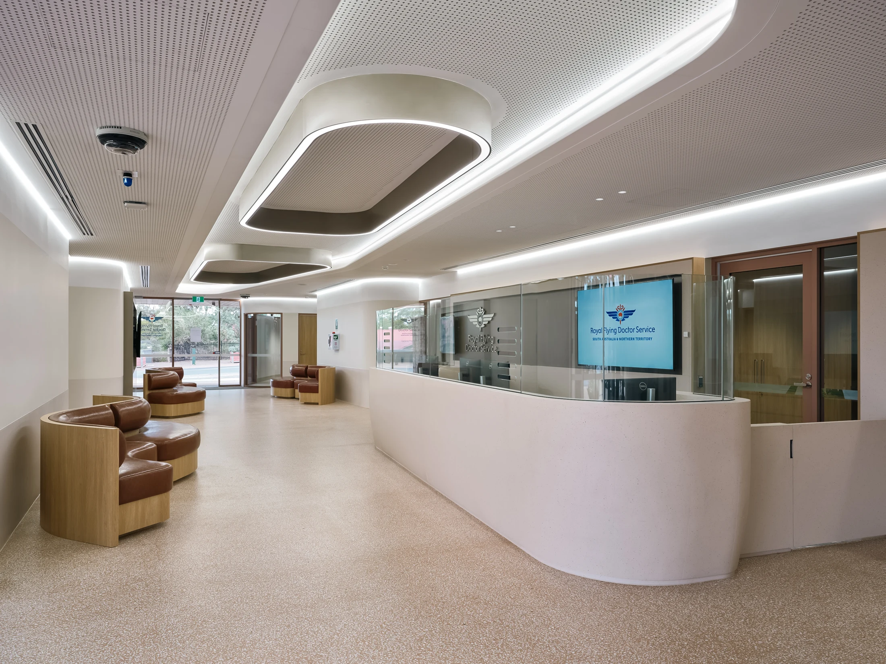
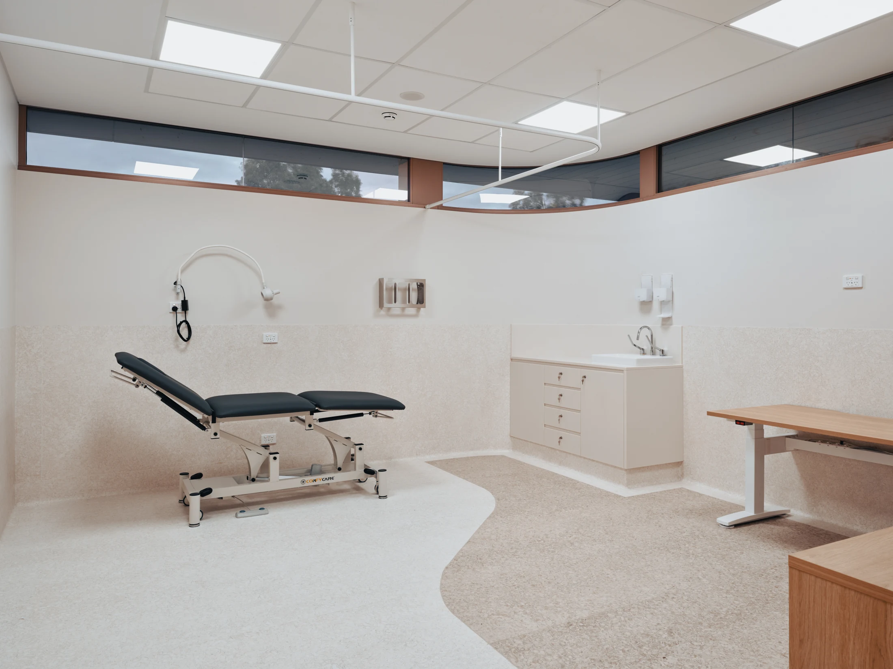
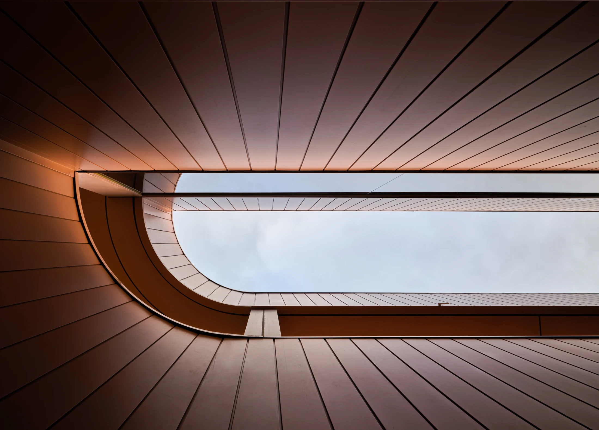
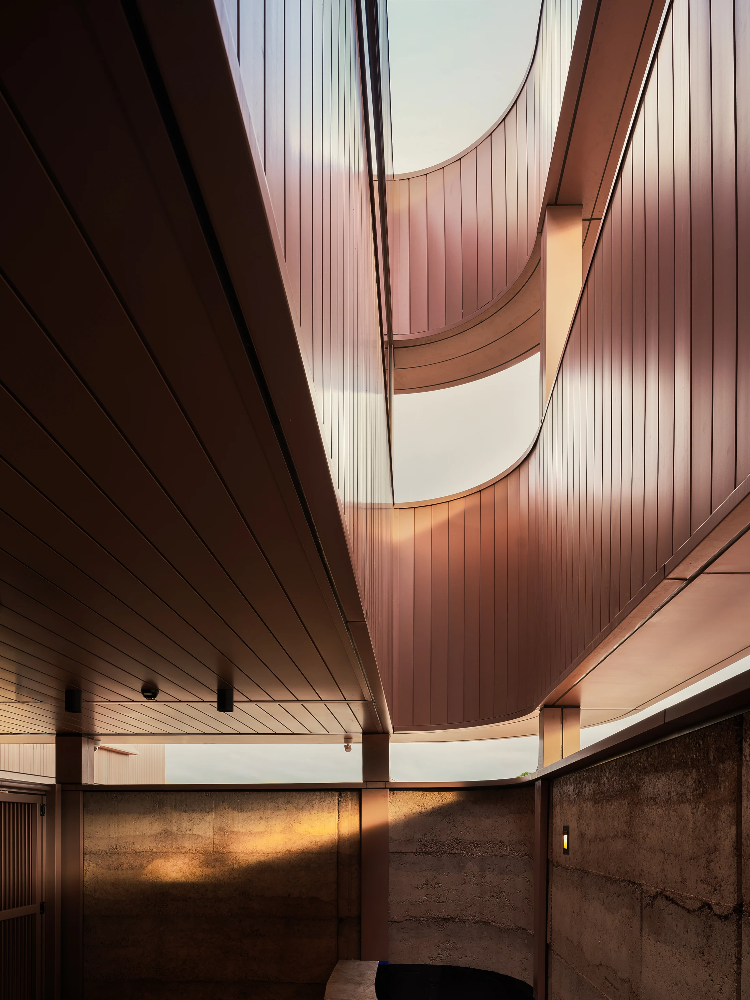
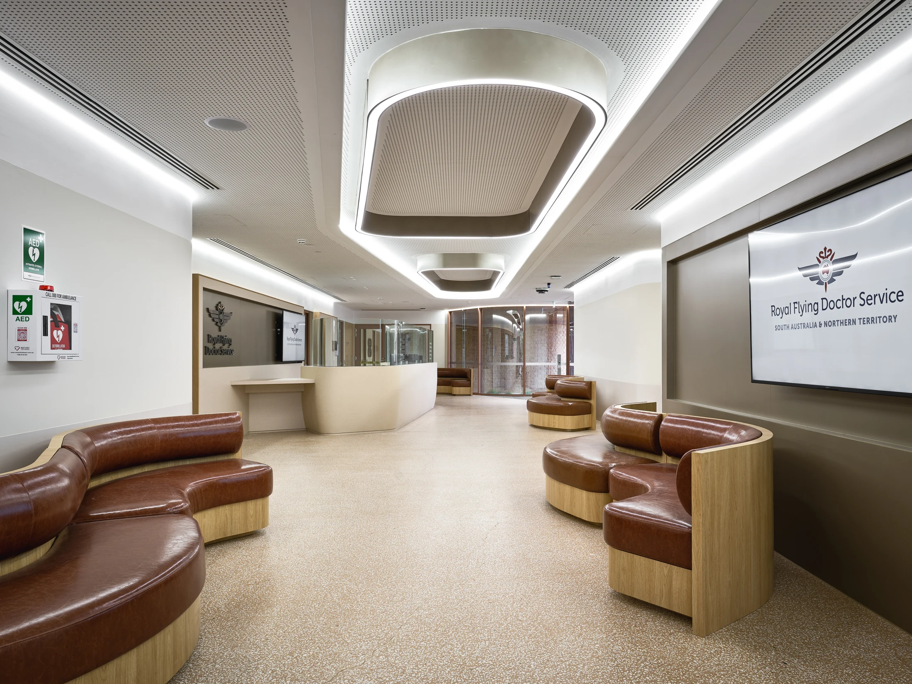
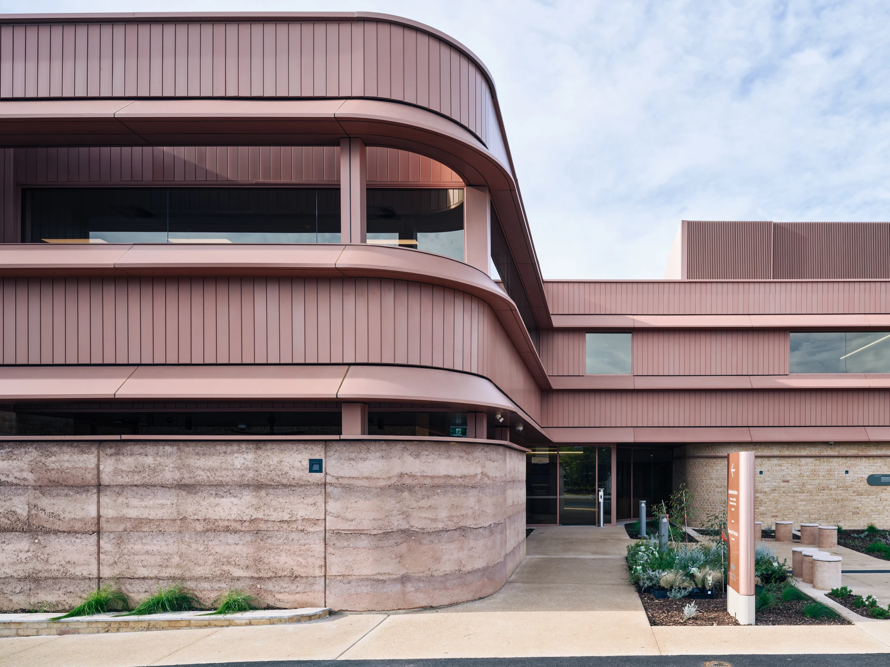
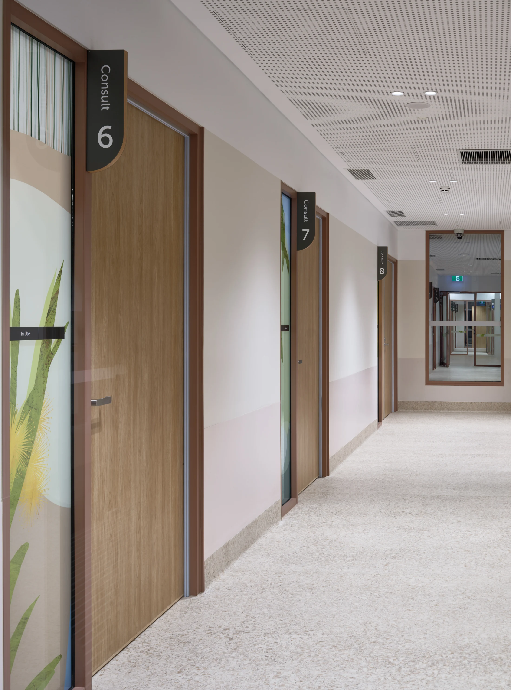
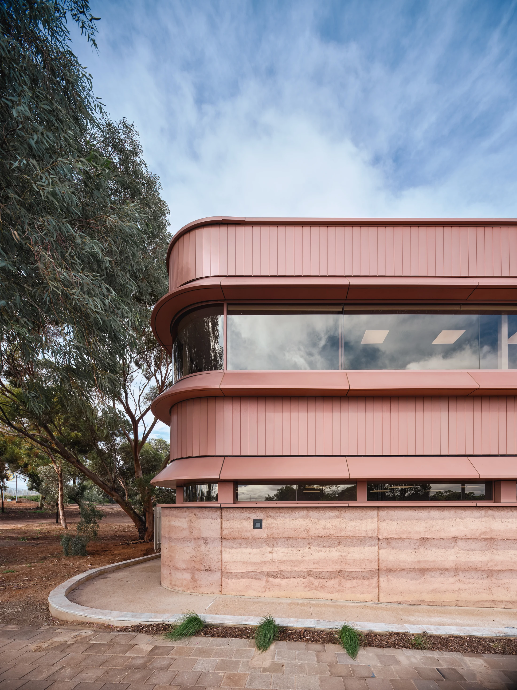
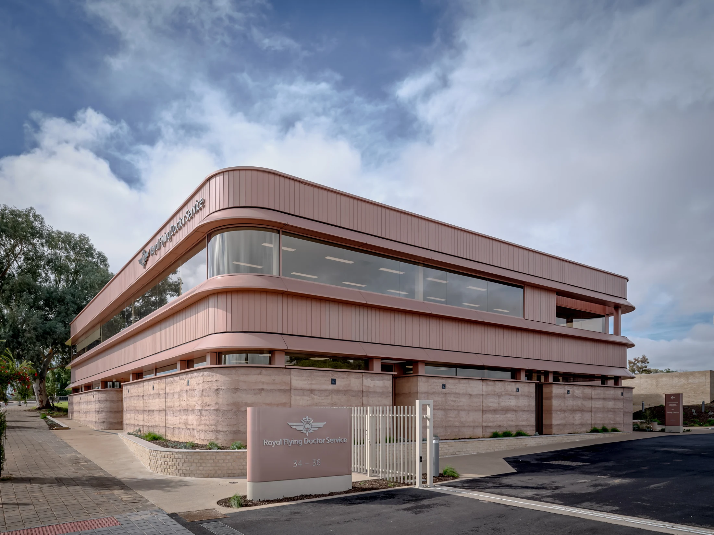
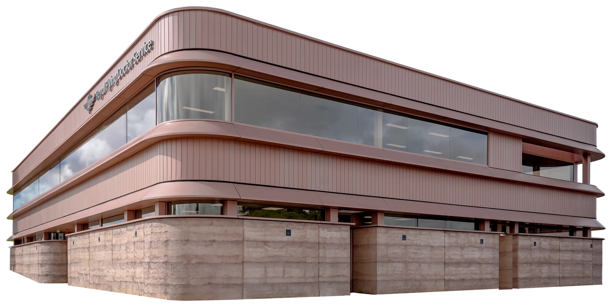

RFDS Port Augusta — photography audit and V5 image direction
Reviewed 13 October 2026. All 10 image files in Archive.zip were opened individually: nine photographs and one transparent derivative. The __MACOSX entries are filesystem metadata, not additional photographs. Source files are preserved; web exports are resized/compressed derivatives without generative retouching, recolouring or geometric alteration.
Selection
Desktop hero: PACRE-198.jpg. Mobile hero: PACRE-197.jpg. The wide view establishes the whole recognisable building; the portrait view keeps its rounded corner legible at phone proportions. Health: PACRE-191.jpg. Education transition: PACRE-192.jpg. Training transition: PACRE-193.jpg. The latter two are exterior architectural details, not photographs of educational facilities. Community: PACRE-194.jpg. Construction / arrival: PACRE-195.jpg. PACRE-190 and 196 remain supporting alternatives. The PNG cutout is reserved for a possible photo-to-model alignment study and is not used as a substitute model.
Evidence and limits
The supplied photographs show terracotta-coloured vertically jointed cladding, continuous horizontal façade bands, curved glazed corners, textured stratified earth-like base walls, narrow lower-level glazing, elongated openings between roof edges, timber-toned interior fittings, perforated ceilings and curved seating/reception elements. They support visual design decisions. Finish specifications, material origin, floor allocation and room functions beyond visibly marked clinical spaces are not independently certified by photography.
“Verified photography” here means an inspected file from the client’s project archive, not independent authentication of its capture date, authorship or physical survey accuracy. No metadata capture dates or lens specifications are asserted. The approved copy is the factual authority for services, dates and funding. No medical activity, classroom, School of the Air session or training session is depicted in this archive. Empty finished spaces do not imply services are already operating.
Every-file audit
PACRE-190.jpg — reception / waiting area, 3500 × 2625

Complete source frame, resized for viewing · PACRE-190.jpg- Architecture: curved ivory reception front with glass screen; RFDS wordmark on glass and display; repeating illuminated elongated ceiling elements; perforated acoustic ceiling; paired curved brown seating with timber-toned backs; glazed doors at the rear. Keep these exact details, including signage direction and reflections.
- Quality: clear broad architectural view, deep focus and clean neutral-to-warm tonality. Bright light strips have little local texture; do not increase whites. Wide perspective stretches the closest counter and seating, but this is plausible camera perspective rather than a model error.
- Composition / crop: the ceiling and reception front form a strong diagonal route. For a 16:9 variant trim floor first (vertical focal point ~48%); preserve the lit ceiling loop, reception curve and screen. For portrait, select the right reception/screen zone around x≈67%; that loses the room’s full spatial relationship.
- Consistency / suitability: matches 194 and 191, with the screen adding a strong cyan note. Strong supporting “arrival” image; less balanced than 194 for the community beat. No overlaid text on the display or glass logo. Supporting select.
PACRE-191.jpg — clinical room, 3500 × 2625

Complete source frame, resized for viewing · PACRE-191.jpg- Architecture: examination couch left of centre; suspended white curtain track; wraparound high glazing with dark blinds and terracotta-toned framing; sink and wall cabinet; timber-toned adjustable desk; curving pale floor inset. These are the only explicit treatment-room details in the set.
- Quality: crisp, restrained exposure, soft daylight/artificial-light balance, readable pale material transitions. Some window reflections and the cropped lower-right cabinet are part of the original scene. No clinical use is shown.
- Composition / crop: hold the full couch, the sink and the curve in the floor. Desktop focal point 43% 54%; a 4:3 or near-square aperture is safer than a very narrow ribbon. A phone crop must favour the couch; use a landscape image above copy rather than making it a full-height portrait crop.
- Consistency / suitability: visually quieter than reception, with a dark couch that anchors the ivory scheme. Best proof of completed clinical facilities. Avoid naming this a specific specialty, an operating consultation, or a training room. Primary Health select.
PACRE-192.jpg — looking up through roof opening, 3500 × 2515

Complete source frame, resized for viewing · PACRE-192.jpg- Architecture: a long sky opening with a deep rounded left return; standing-seam/panel lines converge towards the opening; a horizontal dark cross-member spans the gap; small lower support detail remains visible. It is an architectural opening, not a classroom window.
- Quality: strong copper/terracotta warmth, natural shadow depth and soft cloud detail. The darkest upper-left region intentionally contains less detail. Preserve the cross-member and panel seams; lifting all shadows would weaken the form.
- Composition / crop: retain the complete left turn and long sky slot. Full-width or broad landscape presentation works; a central portrait crop loses the meaningful curve. The prototype fits this into an elongated aperture with a rounded leading end and keeps the image unwarped.
- Consistency / suitability: a warmer, darker punctuation between pale interiors and the model. Supplies the clearest opening-mask geometry. Used under Education as an explicitly labelled architectural detail, without asserting where School of the Air sits. Primary transition select.
PACRE-193.jpg — vertical roof / courtyard detail, 2625 × 3500

Complete source frame, resized for viewing · PACRE-193.jpg- Architecture: vertically stacked curved edges and sky apertures; terracotta-toned panelled soffits; slender columns; dark services at left; textured base wall in warm angled light; small visible wall light at lower right.
- Quality: elegant warm directional light and clear seam detail, with deep left/bottom shadows. High contrast is appropriate to the source, not a cue to apply a global dark grade to other images.
- Composition / crop: strongest native portrait in the set. Keep both rounded sky cuts and lower wall light for a mobile detail sequence. A desktop landscape crop must favour the middle curved edge; it cannot show the entire height. Prefer 3:4/4:5 for supporting detail. Prototype’s landscape mask intentionally shows an abstract detail and labels it accordingly.
- Consistency / suitability: pairs with 192; avoid showing both for long consecutive full-photo holds. It gives Training a spatial transition, not evidence of training facilities. Primary vertical detail / transition select.
PACRE-194.jpg — reception / waiting area reverse view, 3500 × 2625

Complete source frame, resized for viewing · PACRE-194.jpg- Architecture: opposing curved seating, repeating ceiling loops, perforated ceiling, ivory reception counter, RFDS wall/display marks, glazing and timber-toned frames; AED/emergency cabinet visible at left. Preserve signage and safety equipment.
- Quality: convincing deep-focus spatial view, clear leather/timber/terrazzo-like textures and controlled warm neutrals. Bright perimeter strips are strong; extra contrast/sharpening is unnecessary. Near seats are enlarged by the wide viewpoint.
- Composition / crop: the central aisle creates a strong entrance route. At desktop keep both seat edges as framing and the central ceiling loop; position 50% 50%. A square crop is workable. Portrait crops isolate the central aisle and lose the right RFDS display; do not imply the display is absent in the actual room.
- Consistency / suitability: strongest inviting interior. Use for the two community audiences without claiming either is pictured. Avoid unverified promises about accessibility or patient experience based on the image. Primary community select.
PACRE-195.jpg — close exterior / entrance, 3500 × 2625

Complete source frame, resized for viewing · PACRE-195.jpg- Architecture: curved terracotta-toned upper volume, horizontal cladding/eave bands, dark continuous glazing, rounded stratified base wall, recessed glazed entrance, narrow signage pillar, planting and small cylindrical landscape seats at right.
- Quality: clear vertical joints, façade seam lines and wall texture. Sky and glazing are slightly cooler than interiors, which is consistent with daylight. No need to neutralise the warm façade to ivory.
- Composition / crop: the rounded mass occupies the left two-thirds and the entrance lies at ~65% across. A wide crop can remove some sky/foreground but must retain the entrance and enough top edge to read the turn. The construction beat uses a horizontal-band aperture; anchor 50% 50%.
- Consistency / suitability: best close account of the curved corner and facade layering; more entrance information than 198. Do not infer material provenance or accessibility certification. Primary construction / arrival select.
PACRE-196.jpg — clinical corridor, 2591 × 3500

Complete source frame, resized for viewing · PACRE-196.jpg- Architecture: timber-toned doors, glazed side panels with plant graphics; clearly visible Consult 6, 7 and 8 signs; perforated ceiling; long perspective to a glazed end door and exit sign. Room numbering proves visible signs, not total room counts.
- Quality: sharp sign/door edges, muted warm interior grade, strong near-to-far depth. Far details are small but legible at useful web sizes. A foreground “In Use” marker is visible; do not infer that the centre is currently open from it.
- Composition / crop: preserve Consult 6 and the vanishing point. Strong native portrait, especially as a short corridor interstitial. A 16:9 crop leaves mostly doors/ceiling and loses the architectural progression; avoid full desktop takeover.
- Consistency / suitability: credible secondary clinical evidence; visually busier and more utilitarian than 191. Optional mobile Health detail. It is not a photo of workforce training. Supporting select / reserve.
PACRE-197.jpg — rounded exterior corner with tree, 2625 × 3500

Complete source frame, resized for viewing · PACRE-197.jpg- Architecture: gently curving continuous roof/eave bands, wraparound glazing reflecting cloud and trees, narrow lower glazing, stratified base wall, curved path edge, established tree at left and sky above.
- Quality: coherent daylight colour, detailed facade and landscape, moderate natural contrast. Large sky area supplies breathing room; reflected ceiling lights and trees should remain.
- Composition / crop: building is weighted right, tree balances left. Preserve the curved left facade edge. For a phone hero use a broad image strip with 53% 60% focal point; for a taller mobile hero keep native 3:4. Avoid a panoramic crop that consists mostly of sky. Desktop supporting band intentionally focuses the facade.
- Consistency / suitability: strongest portrait exterior and a softer counterpart to the 198 whole-building view. Architecture can accompany partnership copy without pretending the image depicts funding activity. Mobile hero / partners select.
PACRE-198.jpg — whole-building exterior, 3500 × 2625

Complete source frame, resized for viewing · PACRE-198.jpg- Architecture: recognisable two-storey corner view, long horizontal terracotta-toned eaves/bands, curved glazed corner, vertically jointed cladding, low stratified wall with small square fixtures, entrance sign reading RFDS and 34–36, pale metal gate, paths, planting and road foreground. Keep signage orientation, joint rhythm and the open recess at the upper right.
- Quality: strong tonal separation against textured cloud, clear masonry/cladding detail, plausible perspective. Road and lower-right shadows are darker than the facade. Cloud/roof separation is sufficient; no replacement sky required.
- Composition / crop: corner apex around x≈33%, y≈33%. Keep the left corner, full right roof termination and ground base. Best at 4:3; a 16:9 crop can reduce sky and road but must retain the top curve. Prototype desktop near-square crop uses 48% 53%. It excludes some edge landscape, while retaining building identification. Narrow portrait cropping sacrifices the whole building, hence the 197 mobile substitute.
- Consistency / suitability: strongest establishing photograph and final model-to-reality payoff. It is a street-level photograph, not a drone image. Desktop hero / final payoff select.
PACRE-198.png — isolated photographic cutout, 2995 × 1554, RGBA

Complete source frame, resized for viewing · PACRE-198.png- Architecture: derivative of the 198 corner view; façade, glazing and roof details are photographic, while surrounding site context and foreground sign/gate are removed. The removed sign exposes a visibly simplified/straight lower silhouette: it is not a complete documentary site image.
- Quality: genuine alpha channel (range 0–255), not a black-background file. Roof outline is useful; lower wall/base edge has abrupt, uneven terminations and the isolated building has no grounded landscape/contact context. Needs close edge QA on ivory before any hero use.
- Composition / crop: use
contain, preserving its full 1.93:1 aspect. Never stretch it into the model silhouette, invent hidden walls, or treat its alpha edge as surveyed geometry. Transparent pixels should reveal ivory rather than being flattened to white. - Consistency / suitability: can help a future aligned photographic/model handoff, but its terracotta photographic surfaces make it distinctly different from the ivory GLB. Excluded from V5’s main sequence because the JPEG is stronger documentary evidence and the cutout’s base compromises grounding. Reserve; not a tenth independent photograph.
Scroll storyboard implemented
| Beat | Image / model | Reveal and architectural motivation | Copy / weight |
| Opening | 198 desktop / 197 mobile | Rounded leading corner; real photography establishes identity | Exact official hero; 135vh on desktop |
| Construction complete | 195 | Long horizontal band with a rounded leading turn | $21m; completed construction; access and workforce purpose; 135vh |
| Health | V4 clinical reveal → 191 | Roof and upper assembly lift over first 42%; hold; photographic aperture opens 48–66% | Bulk-billed GP and nurse-led primary healthcare; 165vh |
| Education | V4 education reveal → 192 | Camera rises, schematic upper zone revealed; long sky-slot mask | School of the Air / isolated children; 165vh; detail label |
| Training | V4 open-zone camera → 193 | Short guided model movement; second real roof curve opens one photograph | Junior doctor, medical, nursing, allied health placements; 165vh; detail label |
| Together | Open V4 → closed V4 → 198 | Roof and upper level return during first 60%; closed hold 60–68%; real exterior 68–85% | “Together under one roof.”; 195vh |
| Community | 194 | Rounded interior/reception motif with central aisle visible | Separate local and outback patient benefits; 135vh |
| Partners | 197 | Façade band closes the visual family | Both $1m funders plus fundraising/community balance; 140vh |
| Project details | Ivory editorial footer | Native linear content, no model required | Full facts and RFDS SA & NT link |
Scroll is native wheel/touch/keyboard input. Visual progress follows with a time-based 125 ms response, smoothstep transitions and substantial holds. There is no scroll interception or forced snapping. The Pause motion control removes easing/camera interpolation; OS reduced-motion starts in that mode. Model states remain schematic and cannot prove geographic room allocations.
Mask specification
Three deliberately related shapes replace V4’s unrelated oval/blob crops. Each uses a single left rounded return, straight top/bottom runs and a straight right termination. They are manual visual interpretations, not CAD/BIM outlines or pixel-exact tracings. The subject pixels are not warped; the mask only changes visibility.
- Corner: derived from 195/197 rounded façade turns. Normalized bounds x=.02–.98, y=.06–.94. Longer straight runs keep the stacked horizontal architecture legible.
- Band: derived from the continuous façade bands in 195/198. Bounds x=.025–.98, y=.19–.81, with a shallower left turn. Used between outside views and during the roof-closing payoff.
- Opening: derived from 192’s rounded sky slot and 193’s repeated roof apertures. Bounds x=.015–.98, y=.09–.91. A deeper leading turn carries the Education/Training reveal. It is elongated more strongly in landscape than in phone aspect.
Vectors are in dist/story.js and illustrated in architecture-masks.svg. All crops are reversible CSS background-position and SVG visibility masks. In particular, a mask is not evidence that the actual building has that screen-space outline.
Colour and typography
Ivory #F7F4EE, RFDS blue #004684, cyan #008dc7. Photographs retain the client’s existing grade. Their warm materials, neutral interiors and cooler exterior skies already form a coherent set. No universal desaturation/ivory filter, replacement sky, added people or synthetic classroom is used.
The archives contain no Museo Sans font files. V5 defines 100/300/500/700/900 faces through installed local Museo names, with Avenir Next/Arial fallback. Licensed, authorised webfont files are required for reliable Museo rendering on other devices; another site’s domain-bound Adobe kit is not republished. This preview does not claim Museo is embedded. Add supplied licensed WOFF2 files and replace the local sources before a final brand sign-off.
V4 integrity / scope
The model file was copied from Port_Augusta_v4_Hero_and_Separation_Correction.zip, and its SHA-256 is unchanged. Its four ROOF meshes, independently moved upper shell/zone meshes and schematic ground geometry are retained. No detailed interior was rebuilt. V5 updates presentation, imagery, timing, copy and browser fallbacks. The primary clinical shell stays stationary while roof and upper assemblies move; the together beat restores their base positions.
V4’s unsupported material-origin headline, promised arrival experience and literal “Downstairs, care. Upstairs, the air” text were removed. Old images called education/meeting rooms or drone views are not reused. Photography captions identify actual archive files, while model captions state V4 IVORY MODEL · SCHEMATIC PREVIEW. There is no invented contact address, provider partnership, service start before mid-2027, or replacement-service claim.
Files
originals/: all supplied images, unmodified. inventory.json: dimensions, colour mode, embedded-profile presence and source hashes. contact-sheet.jpg: all ten complete frames, PNG composited onto ivory only for inspection. ../port-augusta-v5/dist/: runnable browser prototype, V4 GLB and web exports. ../port-augusta-v5/previews/: browser captures. See ../port-augusta-v5/VALIDATION.md for completed checks and limits.